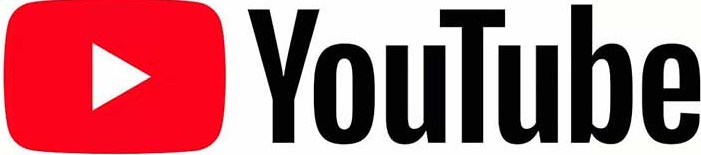

作詞:shito.Gom 作曲:shito 編曲:HoneyWorks
で試聴する:誇り高きアイドル
私のこと知ってますか？
可愛く見えてますか？
私の歌どうだろうな
うまく歌えてますか？
衣装だとかメイクだとか
可愛く見えてますか？
振付とかファンサとかも
喜んでもらえてますか？
ては冷たくなって
足は震える
それでも戦いたい
アイドルだから
馬鹿にする奴は嫌いだ
見下されるのも嫌いだ
”アイドルなんか”と言う言葉を
見てもいないくせに言うな
頑張りを当然と言うな
イメージとか強制するな
”アイドルなんかと”という
言葉はこの世で一番大嫌いだ
プライベート見えないから
分からないと思います
性格とか悪い方です
騙しちゃっていますか？
でも本気で本気なんです
ありのままの私を
好きになって推してください
それってワガママですか？
きっと可愛くない全部
分かってる
それでも好かれてたい
アイドルだから
皮肉言うやつは嫌いだ
言い訳ばかりも嫌いだ
”こんなもんか”という
言葉を軽々しく口にするな
勝手に限界決めるな
笑いものになんてするな
”アイドルなんか”という
言葉はこの世で一番大嫌いだ
向かい風を切り裂け
誇り高きアイドル
目指そうぜ
応援がなければ活動できない
好きなことばかりじゃ
生きてはいけない
元気あげるはずが
もらってばかりだし
恩返しできる日まで
待ってて
歓声が減っても
飽きられちゃっても
それでも笑っていたい
アイドルだから
熱いファンの愛があって
スタッフさんの愛があって
いつも家族の愛があって
生きてるアイドル
バカにする奴は嫌いだ
見下されるのも嫌いだ
”アイドル”なんかという言葉を
見てもいないくせに言うな
頑張りを当然の言うな
イメージとか強制するな
”アイドルなんかと”という
言葉はこの世で一番大嫌いだ
HOMEページに戻る